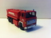

Tankvogne
Diverse Falck tankvogne
Scania 111 Tankvogn
Grundmodel: Scania 111 førerhus fra Herpa, MAN tankvogn fra Herpa
Forbedringer: Førerhus overført til MAN tankvogns underdel. ;aling, blink, decals fra Stoppel Hobby
Forbillede: Se diverse fotos i bogen
Madsen, Frederik - Titel: Falcks Redningskorps i Danmark Forlag: Falck Danmark A/S - Udgivet år: 2004
samt
Falck Agerbæk (Scania 81) (foto: beredskabsbilleder.dk)
og
Otterup brandvæsen (Scania 86) (foto:beredskabsbilleder.dk
